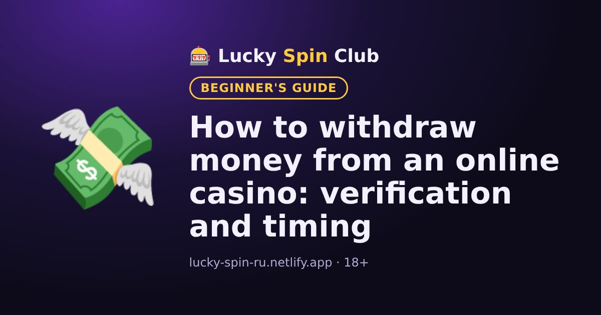

How to withdraw money from an online casino: verification and timing

Updated: 6 November 2026
Winning is nice, but you also need to withdraw. Here is what to know in advance.
Verification
Before the first withdrawal, the casino usually asks you to confirm your identity: a photo of an ID document and sometimes proof of your payment method. It is a standard check. Doing it early saves waiting later.
Same method as the deposit
Withdrawals are often only possible to the same wallet or card you deposited from.
Timing
A request is first reviewed by the casino, then the money is sent by the payment system. Exact times are listed in the “Payments” section.
Why a withdrawal can be delayed
- Verification is not complete.
- An active bonus has not been wagered.
- Your profile details do not match your documents.
- The amount is below the minimum or above the limit.
Ready to try? Signing up takes about a minute.
🎁 Sign up and get the bonusFrequently asked questions
Why does the casino ask for documents before a withdrawal?
It is a standard check (verification): the casino has to confirm the player's age and identity and prevent fraud.
Can I withdraw to a different card?
Often withdrawals are only possible to the same payment method used for the deposit. The exact rules are in the “Payments” section.
Why is my withdrawal delayed?
Common reasons: verification is not complete, an active bonus has not been wagered, profile details do not match your documents, or the amount is outside the limits.